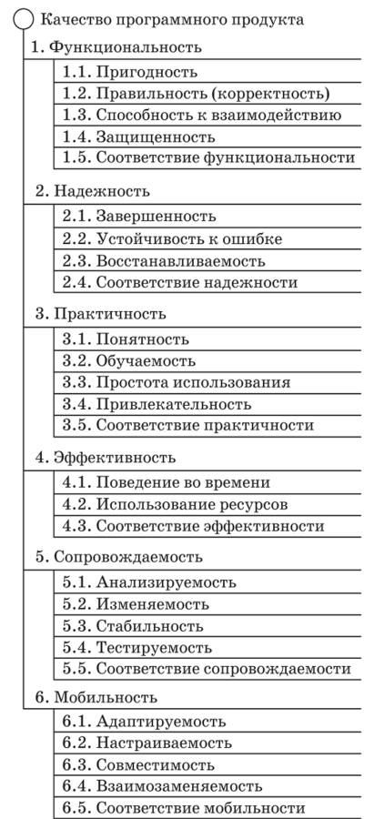

1.Уровни качества программной продукции
Качество программного продукта
Любой программный продукт должен выполнять те функции, для которых был создан. Качественный ПП должен обладать еще рядом свойств, позволяющих успешно его использовать в течение продолжительного времени.
Качество ПП — это совокупность его черт и характеристик, которые влияют на способность ПП удовлетворять заданные потребности пользователя.Это, однако, не означает, что разные ПП должны обладать одним и тем же набором свойств с одинаковыми значениями количественных показателей. Как и в случае технических устройств, показатели качества являются противоречивыми, что означает: улучшение одних показателей качества может быть достигнуто за счет ухудшения других. Качество ПП является удовлетворительным, если количественные показатели свойств гарантируют успешное его использование.
Критериями качества ПП являются:
- функциональность;
- надежность;
- легкость применения;
- эффективность;
- сопровождаемость;
- мобильность.
Функциональность — это способность ПП выполнять набор функций, определенных его внешними спецификациями.
Надежность ПП — это способность безотказно выполнять заданные функции при заданных условиях в течение заданного периода времени с высокой степенью вероятности. Таким образом, надежность не означает безошибочности, для надежного ПП важно, чтобы ошибки появлялись при применении ПП достаточно редко и не приводили к катастрофическим последствиям.
Легкость применения — это способность минимизировать затраты пользователя на подготовку и ввод исходных данных и оценку полученных результатов, а также вызывать положительные эмоции пользователя.
Эффективность — это отношение уровня услуг, предоставляемых ПП к объему используемых вычислительных ресурсов. Напомню, что объем используемых вычислительных ресурсов количественно определяется затратами машинного времени и оперативной памяти на выполнение заданных функций.
Обращаю ваше внимание на то, что тестирование программ более объемно, чем мы с вами рассматривали. Тестирование включает три аспекта проверки программ: на правильность ( именно этому аспекту были посвящены лекции по тестированию); на вычислительную сложность и на эффективность реализации. Проверка вычислительной сложности заключается в экспериментальном анализе сложности программы или экспериментальном сравнении двух или нескольких алгоритмов, решающих одну и туже задачу. Этой проблемой, в основном, занимается вычислительная математика. Проверка эффективности реализации направлена на отыскание способа заставить правильную программу (правильную в смысле удовлетворения первому аспекту проверки) работать быстрее или расходовать меньше памяти. “Или” здесь свидетельствует о том, что показатели объема используемой памяти и времени выполнения противоречивы! Короткая программа иногда выполняется дольше более длинной программы! / /.
Предлагаю Вам самостоятельно найти самый быстрый вариант вычисления корней квадратного уравнения и доказать это/4//
Сопровождаемость — это такие характеристики ПП, которые позволяют минимизировать усилия по внесению изменений при обнаружении ошибок в ПП и при его модификации. Не последнюю роль в повышении сопровождаемости играют комментарии к тексту программы!
Мобильность — это способность ПП быть перенесенным из одной вычислительной среды (окружения) в другую, в частности, с одной ЭВМ на другую (применяют термин “перенос с одной платформы на другую”.
Функциональность и надежность являются обязательными критериями качества ПП, причем обеспечение надежности является неотъемлемой частью всех этапов и процессов разработки ПП. Достижению высоких показателей надежности способствует применение технологий программирования. Первой из них рассмотрим модульное программирование.
В последние годы усилиями международных организаций был разработан ряд стандартов (СТБ ИСО/МЭК 9126-2003 и ИСО/МЭК 14598-1999), в которых качество программных продуктов было охарактеризовано в виде многоуровневой иерархической структуры — дерева качества программного продукта с детальным

Рис. 2.6. Дерево стандартизованных свойств (показателей) качества программного продукта
определением и пояснением каждого свойства на каждом уровне (рис. 2.6). Приведенный рисунок из соображений удобства отражает усеченное дерево свойств качества программного продукта, имеющее всего два уровня (яруса): на первом (верхнем) — шесть свойств (показателей), на втором — от трех до пяти. Более детальный рисунок дерева приведен в вышеупомянутых стандартах.
В соответствии с этим деревом качества свойство 1 «Функциональность» отражает способность программного продукта обеспечивать функции, удовлетворяющие потребности пользователя в заданных условиях. Свойство 2 «Надежность» гарантирует способность поддерживать заданный уровень качества функционирования в заданных условиях. Свойство 3 «Практичность» характеризует программный продукт с точки зрения его понятности, удобства изучения, использования и привлекательности (например, за счет использования цветов, графики и т.п.). Свойство 4 «Эффективность» свидетельствует о способности обеспечивать соответствующую производительность при заданных условиях и используемых вычислительных ресурсах. «Сопровождаемость» (свойство 5) подчеркивает способность к модификациям (исправлениям, усовершенствованиям, адаптации). Наконец, свойство 6 «Мобильность» отражает способность к переносу из одной среды в другую.
Характеристики свойств (показателей), формируемых на втором ярусе дерева, определены в вышеупомянутых международных стандартах и в специальной литературе. Отметим, что вторичные свойства 1.5, 2.4, 3.5, 4.3, 5.5 и 6.5 («Соответствие ...») характеризуют способность программного продукта удовлетворять стандартам, соглашениям или нормативным документам, связанным с соответствующим первичным свойством.